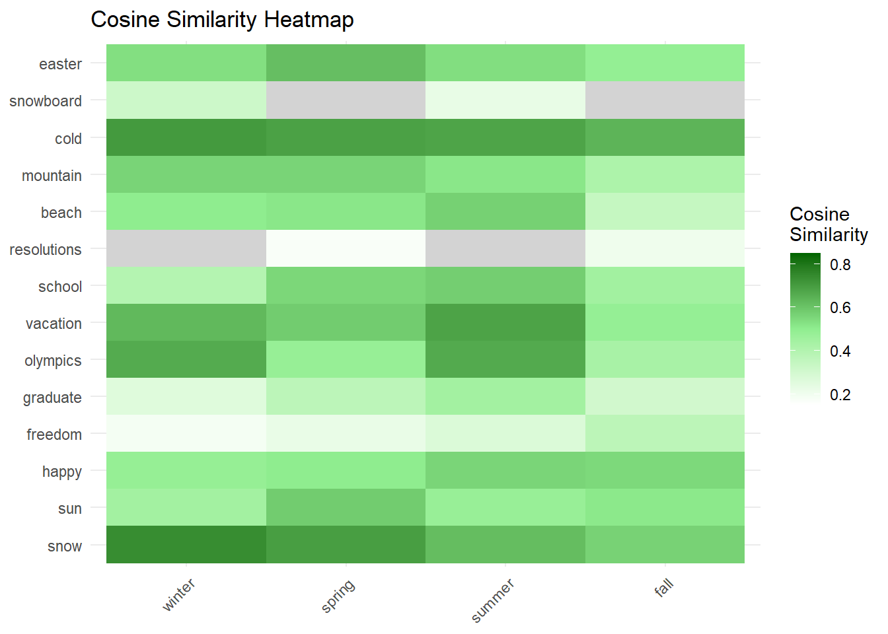
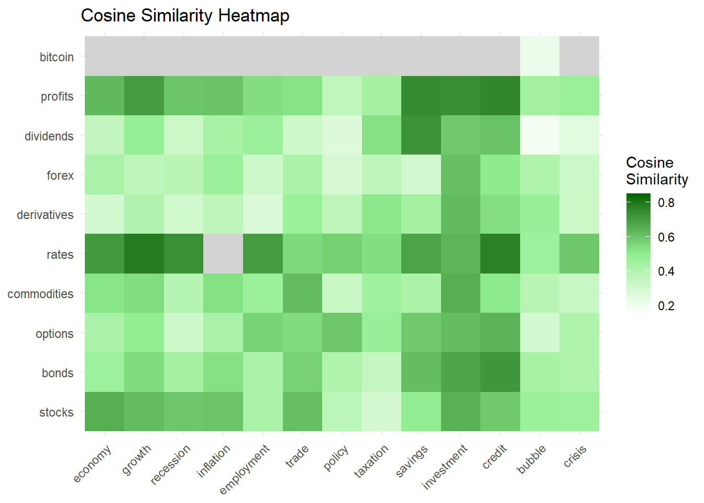
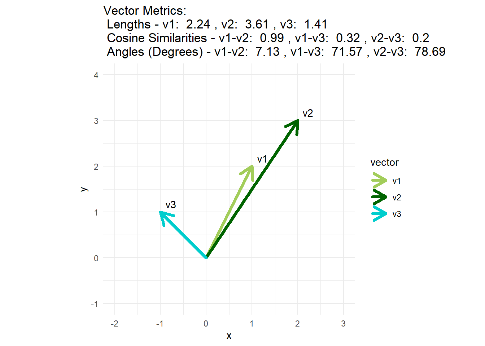

library(data.table)
library(word2vec)
# First with some seasons
vector1_words <- c("snow","sun", "happy", "freedom", "graduate", "olympics", "vacation",
"school", "resolutions", "beach", "mountain", "cold", "snowboard", "easter")
vector2_words <- c("winter", "spring", "summer", "fall")The word2vec package has a function to compute the cosine similarity, word2vec_similarity (…, type = “cosine”). This is a measure of semantic relatedness between the words in the two sets. My example uses the GloVe embeddings which conveniently comes in four sizes. I’m using the smallest: it has 6B tokens, 400K vocab, and 50 dimensions.
# path to the GloVe file
glove_path <- "glove.6B/glove.6B.50d.txt"
# Function to load GloVe vectors from a file using data.table's fread for efficiency
read_glove <- function(file_path) {
# Define column types: first column as character, remaining as numeric
num_columns <- length(fread(file_path, nrows = 1, header = FALSE)) # Detect the number of columns
col_types <- c("character", rep("numeric", num_columns - 1))
# Load data using fread with specified column types for efficiency
embeddings <- fread(file_path, header = FALSE, quote = "", colClasses = col_types)
setnames(embeddings, old = names(embeddings), new = c("word", paste0("V", 1:(num_columns-1))))
# Convert to data.table (if not already one, although fread should return a data.table)
embeddings <- as.data.table(embeddings)
return(embeddings)
}
# Load the GloVe embeddings
m_w2v <- read_glove(glove_path)
# Function to get embeddings for given words, retaining as dataframes
get_embeddings <- function(model, words) {
setkey(model, word)
embeddings <- model[J(words), .SD, .SDcols = -"word", nomatch = 0L]
return(as.data.frame(embeddings))
}
# Obtain the vector for the words as dataframes
vector1_embeds <- get_embeddings(m_w2v, vector1_words)
vector2_embeds <- get_embeddings(m_w2v, vector2_words)
save(vector1_embeds, vector2_embeds, file = "embeddings.RData")# Load the saved data
load("embeddings.RData")
# Convert dataframes to matrices by dropping the first column
vector1_embeds_m <- as.matrix(vector1_embeds[, , drop = FALSE])
vector2_embeds_m <- as.matrix(vector2_embeds[, , drop = FALSE])
# Set row and column names for matrices
rownames(vector1_embeds_m) <- vector1_words
rownames(vector2_embeds_m) <- vector2_words
# Manual cosine similarity function
# cosine_similarity <- function(matrix1, matrix2) {
# # Compute cosine similarity between each row of matrix1 and each row of matrix2
# result <- matrix(0, nrow = nrow(matrix1), ncol = nrow(matrix2))
# for (i in 1:nrow(matrix1)) {
# for (j in 1:nrow(matrix2)) {
# result[i, j] <- sum(matrix1[i, ] * matrix2[j, ]) / (sqrt(sum(matrix1[i, ]^2)) * sqrt(sum(matrix2[j, ]^2)))
# }
# }
# dimnames(result) <- list(row.names(matrix1), row.names(matrix2))
# return(result)
# }
# reduced to vector via perplexity.ai
cosine_similarity <- function(matrix1, matrix2) {
norm_matrix1 <- sqrt(rowSums(matrix1^2))
norm_matrix2 <- sqrt(rowSums(matrix2^2))
result <- matrix1 %*% t(matrix2) / (norm_matrix1 %o% norm_matrix2)
dimnames(result) <- list(row.names(matrix1), row.names(matrix2))
return(result)
}
# Compute the similarity between the two collections of embeddings
similarity_results <- word2vec_similarity(vector1_embeds_m, vector2_embeds_m, type = "cosine")
# Manually compute cosine similarity
manual_similarity_results <- cosine_similarity(vector1_embeds_m, vector2_embeds_m)
# Print the word2vec similarity results with row and column names
print("word2vec_similarity results:")[1] "word2vec_similarity results:"print(similarity_results) winter spring summer fall
snow 0.74060750 0.6964127 0.6185668 0.56641267
sun 0.44684617 0.5821715 0.4779792 0.51110896
happy 0.48315357 0.5025316 0.5600725 0.55038269
freedom 0.18728386 0.2240220 0.2712362 0.37236292
graduate 0.25918016 0.3720566 0.4477611 0.30587616
olympics 0.66266054 0.4803844 0.6666942 0.43193908
vacation 0.62894331 0.5821243 0.6841100 0.48557090
school 0.39520736 0.5557101 0.5765137 0.44969041
resolutions 0.09918001 0.1713954 0.1218020 0.20536671
beach 0.50168442 0.5167443 0.5708564 0.34396521
mountain 0.56219188 0.5624794 0.5173146 0.41781316
cold 0.70774047 0.6885744 0.6803068 0.64044657
snowboard 0.32065189 0.1373841 0.2275361 0.03604394
easter 0.53620372 0.6156216 0.5384656 0.48892540# Print the manually calculated cosine similarity results
print("Manual cosine_similarity results:")[1] "Manual cosine_similarity results:"print(manual_similarity_results) winter spring summer fall
snow 0.74060750 0.6964127 0.6185668 0.56641267
sun 0.44684617 0.5821715 0.4779792 0.51110896
happy 0.48315357 0.5025316 0.5600725 0.55038269
freedom 0.18728386 0.2240220 0.2712362 0.37236292
graduate 0.25918016 0.3720566 0.4477611 0.30587616
olympics 0.66266054 0.4803844 0.6666942 0.43193908
vacation 0.62894331 0.5821243 0.6841100 0.48557090
school 0.39520736 0.5557101 0.5765137 0.44969041
resolutions 0.09918001 0.1713954 0.1218020 0.20536671
beach 0.50168442 0.5167443 0.5708564 0.34396521
mountain 0.56219188 0.5624794 0.5173146 0.41781316
cold 0.70774047 0.6885744 0.6803068 0.64044657
snowboard 0.32065189 0.1373841 0.2275361 0.03604394
easter 0.53620372 0.6156216 0.5384656 0.48892540Heatmap #1
library(ggplot2)
similarity_matrix <- similarity_results
# Convert the matrix to a data frame for plotting
similarity_df <- as.data.frame(as.table(similarity_matrix))
names(similarity_df) <- c("Word1", "Word2", "Similarity")
# Plot the heatmap
ggplot(similarity_df, aes(x = Word2, y = Word1, fill = Similarity)) +
geom_tile() +
scale_fill_gradient2(low = "white", high = "darkgreen", mid = "lightgreen", midpoint = 0.5, na.value = "lightgrey",
limit = c(0.15, 0.85), space = "Lab", name="Cosine\nSimilarity") +
theme_minimal() +
theme(axis.text.x = element_text(angle = 45, hjust = 1)) +
labs(x = NULL, y = NULL, title = "Cosine Similarity Heatmap")
Now let’s try some finance terms. Please note the following (attempted) terms were not in the vocabulary: mutual funds, ETFs, hedge funds, IPO, venture capital, interest rates, capital gains.
vector3_words <- c("stocks", "bonds", "options", "commodities", "rates", "derivatives", "forex", "dividends", "profits", "bitcoin")
vector4_words <- c("economy", "growth", "recession", "inflation", "employment", "trade", "policy", "taxation", "savings", "investment", "credit", "bubble", "crisis")# Obtain the vector for the words as dataframes
vector3_embeds <- get_embeddings(m_w2v, vector3_words)
vector4_embeds <- get_embeddings(m_w2v, vector4_words)
save(vector3_embeds, vector4_embeds, file = "embeddings_34.RData")# Load the saved data
load("embeddings_34.RData")
# Convert dataframes to matrices by dropping the first column
vector3_embeds_m <- as.matrix(vector3_embeds[, , drop = FALSE])
vector4_embeds_m <- as.matrix(vector4_embeds[, , drop = FALSE])
# Set row and column names for matrices
rownames(vector3_embeds_m) <- vector3_words
rownames(vector4_embeds_m) <- vector4_words
# let's take a peek at the embeddings
head(vector3_embeds_m) V1 V2 V3 V4 V5 V6
stocks -0.304610 -1.4674000 1.0339000 0.14557 0.535040 -1.575700
bonds 0.053955 0.8812100 0.8565000 -0.20719 1.072600 -0.354610
options 0.818180 -0.0018368 0.1263900 0.07622 0.425640 -0.173030
commodities -1.089200 -0.3018700 0.0020088 0.25898 0.554150 -1.228800
rates 0.039516 0.1661000 0.8140900 -1.45040 -0.148450 0.073889
derivatives 0.575780 -0.8715800 -0.6703500 0.56391 -0.091724 -0.233350
V7 V8 V9 V10 V11 V12 V13
stocks -0.91688 -0.470040 0.027446 0.75741 -0.126610 0.410620 -0.13210
bonds -0.59801 -0.041351 -0.867160 1.52430 0.065444 1.437200 -0.37355
options -0.57796 -0.697320 0.075147 0.25275 -0.519190 0.750270 -0.22839
commodities -0.42239 -0.717090 0.314950 0.60729 0.384160 1.014300 0.41011
rates -0.24380 -0.343300 0.419020 0.68477 0.364990 -0.051736 0.46768
derivatives 0.60699 -0.940460 -0.443700 0.87039 0.353680 1.665900 -0.36448
V14 V15 V16 V17 V18 V19
stocks -0.053953 -0.49372 0.23878000 -0.49937 -1.06340 -1.0352000
bonds 0.235370 0.48319 -0.00079928 -0.37230 -0.88557 -0.0860290
options 0.109770 0.51518 0.60851000 -0.24583 -0.22688 0.3012900
commodities -0.362340 0.26070 0.90311000 0.70178 -0.43206 0.0033324
rates -0.282720 0.86439 1.25490000 -0.40841 -1.36890 0.0502820
derivatives 0.215620 -0.17925 0.69415000 0.68965 -0.24461 -0.2362100
V20 V21 V22 V23 V24 V25 V26
stocks -0.918810 1.14860 -0.939140 0.348840 -0.73349 -0.42395 -0.93715
bonds 0.073888 0.40328 -1.178000 0.057708 -0.63639 -1.23660 -1.15770
options -1.341800 0.86571 0.071238 -0.163540 0.02818 -0.85099 -0.58100
commodities -0.541880 1.95030 -1.133000 0.414170 -0.70532 -1.16120 -0.36338
rates -0.399500 0.82278 -1.180400 -0.257900 0.34308 -0.28327 -1.31410
derivatives -0.500710 1.15860 -1.306800 0.359210 -0.19697 -1.63760 -0.14748
V27 V28 V29 V30 V31 V32 V33
stocks -0.332530 -0.0566020 0.38061 0.61549 3.3407 -0.0038774 2.14450
bonds 0.892850 0.0150670 0.32386 -0.34508 2.6226 -0.0013841 1.35190
options 0.373040 0.0379580 0.51911 0.28907 2.7952 0.4996700 -0.28144
commodities -0.027678 0.0303900 1.07310 0.75952 1.7197 -0.2790900 1.56710
rates 0.614310 0.0047396 0.22355 1.27600 3.4325 0.8538900 1.11940
derivatives 0.180370 0.1904500 0.17288 0.24625 1.9284 -0.7684700 1.15030
V34 V35 V36 V37 V38 V39 V40
stocks 0.926830 0.60325 -1.61500 -1.38360 -0.065517 0.45422 -0.54098
bonds 0.563430 0.85181 -0.90463 -0.74237 -0.624620 0.64776 -0.56123
options -0.177500 1.17470 -0.12476 -0.19555 0.390550 -0.36998 -0.46532
commodities -0.034941 0.55932 -0.22151 -1.53650 0.275650 0.38103 0.31283
rates -0.189810 0.51273 -1.29680 -0.15964 -0.443440 0.56736 -0.96352
derivatives 0.211810 0.29028 -0.36221 -0.86754 -0.353690 0.65534 0.15686
V41 V42 V43 V44 V45 V46 V47
stocks -1.262600 -0.625500 1.48930 0.36952 1.00700 0.953710 -0.091711
bonds -1.116000 -0.712480 0.50404 0.83037 -0.18559 -0.862990 0.020761
options -0.082226 -0.102450 0.35924 1.28950 -0.32116 -0.240720 0.441460
commodities -0.681060 0.176410 1.13400 -0.21763 1.13790 -0.059712 -0.382590
rates -1.300300 0.092828 0.54410 0.55348 0.22408 -0.702960 0.879530
derivatives -0.179490 -0.256400 0.61864 1.63170 0.26714 -0.403450 0.274400
V48 V49 V50
stocks 0.47243 0.857530 -0.252460
bonds 0.69767 0.176220 -0.061234
options 1.40490 0.036192 0.836890
commodities 0.72958 0.466120 0.031925
rates 0.55588 1.208600 0.696090
derivatives 1.28490 0.347670 0.170310# Compute the similarity between the two collections of embeddings
similarity_results_34 <- word2vec_similarity(vector3_embeds_m, vector4_embeds_m, type = "cosine")
manual_similarity_results_34 <- cosine_similarity(vector3_embeds_m, vector4_embeds_m)
print(similarity_results_34) economy growth recession inflation employment trade
stocks 0.6543422 0.62007452 0.59526192 0.60085050 0.42489006 0.61368009
bonds 0.4637305 0.54376443 0.44280267 0.53011852 0.41888616 0.56744646
options 0.4269524 0.49767143 0.31604605 0.42745661 0.56496866 0.54253085
commodities 0.5202014 0.53977354 0.39269516 0.52904273 0.47065707 0.62212420
rates 0.7086932 0.78672800 0.73328898 0.85153677 0.70128855 0.54709485
derivatives 0.2988538 0.40568577 0.30320260 0.36667512 0.27455183 0.46914940
forex 0.4257138 0.36842936 0.37859731 0.46558987 0.31722917 0.41894168
dividends 0.3537533 0.48660157 0.32229909 0.43606281 0.46390675 0.31826466
profits 0.6275514 0.70503755 0.59861061 0.60235274 0.53796926 0.52493501
bitcoin -0.0541216 0.03493676 -0.04824469 0.01195249 0.04527736 0.06990727
policy taxation savings investment credit bubble
stocks 0.3747459 0.2950646 0.49178875 0.6488230 0.58796428 0.4682450
bonds 0.4075023 0.3453886 0.61786046 0.6815478 0.71707377 0.4334311
options 0.5926147 0.4764435 0.58829868 0.6198547 0.64281115 0.2976527
commodities 0.3381450 0.4562960 0.42016524 0.6546651 0.51031545 0.3831783
rates 0.5729593 0.5383437 0.68319434 0.6399161 0.77233023 0.4628740
derivatives 0.3697109 0.5112416 0.44523532 0.6246813 0.53530854 0.4792272
forex 0.2880027 0.3688206 0.30354127 0.6133588 0.50546878 0.4103989
dividends 0.2700477 0.5291473 0.72554563 0.5885093 0.60591348 0.1910648
profits 0.3596783 0.4465050 0.74628510 0.7363422 0.75504754 0.4472093
bitcoin -0.1207107 0.1346502 0.04307261 0.0580044 0.08996263 0.2155762
crisis
stocks 0.45859117
bonds 0.41259474
options 0.40729326
commodities 0.33716979
rates 0.59322215
derivatives 0.32158326
forex 0.32268079
dividends 0.25570619
profits 0.47337060
bitcoin -0.07205889print(manual_similarity_results_34) economy growth recession inflation employment trade
stocks 0.6543422 0.62007452 0.59526192 0.60085050 0.42489006 0.61368009
bonds 0.4637305 0.54376443 0.44280267 0.53011852 0.41888616 0.56744646
options 0.4269524 0.49767143 0.31604605 0.42745661 0.56496866 0.54253085
commodities 0.5202014 0.53977354 0.39269516 0.52904273 0.47065707 0.62212420
rates 0.7086932 0.78672800 0.73328898 0.85153677 0.70128855 0.54709485
derivatives 0.2988538 0.40568577 0.30320260 0.36667512 0.27455183 0.46914940
forex 0.4257138 0.36842936 0.37859731 0.46558987 0.31722917 0.41894168
dividends 0.3537533 0.48660157 0.32229909 0.43606281 0.46390675 0.31826466
profits 0.6275514 0.70503755 0.59861061 0.60235274 0.53796926 0.52493501
bitcoin -0.0541216 0.03493676 -0.04824469 0.01195249 0.04527736 0.06990727
policy taxation savings investment credit bubble
stocks 0.3747459 0.2950646 0.49178875 0.6488230 0.58796428 0.4682450
bonds 0.4075023 0.3453886 0.61786046 0.6815478 0.71707377 0.4334311
options 0.5926147 0.4764435 0.58829868 0.6198547 0.64281115 0.2976527
commodities 0.3381450 0.4562960 0.42016524 0.6546651 0.51031545 0.3831783
rates 0.5729593 0.5383437 0.68319434 0.6399161 0.77233023 0.4628740
derivatives 0.3697109 0.5112416 0.44523532 0.6246813 0.53530854 0.4792272
forex 0.2880027 0.3688206 0.30354127 0.6133588 0.50546878 0.4103989
dividends 0.2700477 0.5291473 0.72554563 0.5885093 0.60591348 0.1910648
profits 0.3596783 0.4465050 0.74628510 0.7363422 0.75504754 0.4472093
bitcoin -0.1207107 0.1346502 0.04307261 0.0580044 0.08996263 0.2155762
crisis
stocks 0.45859117
bonds 0.41259474
options 0.40729326
commodities 0.33716979
rates 0.59322215
derivatives 0.32158326
forex 0.32268079
dividends 0.25570619
profits 0.47337060
bitcoin -0.07205889Heatmap #2
similarity_matrix_34 <- similarity_results_34
# Convert the matrix to a data frame for plotting
similarity_df_34 <- as.data.frame(as.table(similarity_matrix_34))
names(similarity_df_34) <- c("Word1", "Word2", "Similarity")
# Plot the heatmap
ggplot(similarity_df_34, aes(x = Word2, y = Word1, fill = Similarity)) +
geom_tile() +
scale_fill_gradient2(low = "white", high = "darkgreen", mid = "lightgreen", midpoint = 0.5, na.value = "lightgrey",
limit = c(0.15, 0.85), space = "Lab", name="Cosine\nSimilarity") +
theme_minimal() +
theme(axis.text.x = element_text(angle = 45, hjust = 1)) +
labs(x = NULL, y = NULL, title = "Cosine Similarity Heatmap")
Appendix
Illustration of cosine similarity
# Load necessary library
library(ggplot2)
library(grid) # For arrow functions
# Define three vectors
v1 <- c(1, 2)
v2 <- c(2, 3)
v3 <- c(-1, 1)
# Create a data frame for plotting
vector_data <- data.frame(
x = c(0, 0, 0), y = c(0, 0, 0),
xend = c(v1[1], v2[1], v3[1]),
yend = c(v1[2], v2[2], v3[2]),
vector = c("v1", "v2", "v3")
)
# Function to calculate cosine similarity
cosine_similarity <- function(a, b) {
sum(a * b) / (sqrt(sum(a^2)) * sqrt(sum(b^2)))
}
# Function to calculate vector magnitude
vector_length <- function(v) {
sqrt(sum(v^2))
}
# Calculate cosine similarities
sim_v1_v2 <- cosine_similarity(v1, v2)
sim_v1_v3 <- cosine_similarity(v1, v3)
sim_v2_v3 <- cosine_similarity(v2, v3)
# Calculate angles in degrees
angle_v1_v2 <- acos(sim_v1_v2) * (180 / pi)
angle_v1_v3 <- acos(sim_v1_v3) * (180 / pi)
angle_v2_v3 <- acos(sim_v2_v3) * (180 / pi)
# Calculate vector lengths
length_v1 <- vector_length(v1)
length_v2 <- vector_length(v2)
length_v3 <- vector_length(v3)
# Plot the vectors
ggplot(vector_data, aes(x = x, y = y)) +
geom_segment(aes(xend = xend, yend = yend, color = vector),
arrow = arrow(length = unit(0.2, "inches")), size = 1.5, lineend = 'round') +
geom_text(aes(x = xend, y = yend, label = vector), vjust = -0.5, hjust = -0.5) +
coord_fixed(ratio = 1, xlim = c(-2, 3), ylim = c(-1, 4)) +
ggtitle(paste("Vector Metrics:\n",
"Lengths v1: ", round(length_v1, 2), ", v2: ",
round(length_v2, 2), ", v3: ",
round(length_v3, 2), "\n",
"Cosine Similarities v1-v2: ",
round(sim_v1_v2, 2), ", v1-v3: ",
round(sim_v1_v3, 2), ", v2-v3: ",
round(sim_v2_v3, 2), "\n",
"Angles (Degrees) v1-v2: ",
round(angle_v1_v2, 2), ", v1-v3: ",
round(angle_v1_v3, 2), ", v2-v3: ",
round(angle_v2_v3, 2))) +
theme_minimal() +
scale_color_manual(values = c("darkolivegreen3", "darkgreen", "cyan3"))
# Print the lengths, cosine similarities, and angles
cat("Vector Lengths:\n")Vector Lengths:cat("v1:", length_v1, "\n")v1: 2.236068 cat("v2:", length_v2, "\n")v2: 3.605551 cat("v3:", length_v3, "\n")v3: 1.414214 cat("Cosine Similarities:\n")Cosine Similarities:cat("v1-v2:", sim_v1_v2, "\n")v1-v2: 0.9922779 cat("v1-v3:", sim_v1_v3, "\n")v1-v3: 0.3162278 cat("v2-v3:", sim_v2_v3, "\n")v2-v3: 0.1961161 cat("Angles (Degrees):\n")Angles (Degrees):cat("v1-v2:", angle_v1_v2, "\n")v1-v2: 7.125016 cat("v1-v3:", angle_v1_v3, "\n")v1-v3: 71.56505 cat("v2-v3:", angle_v2_v3, "\n")v2-v3: 78.69007